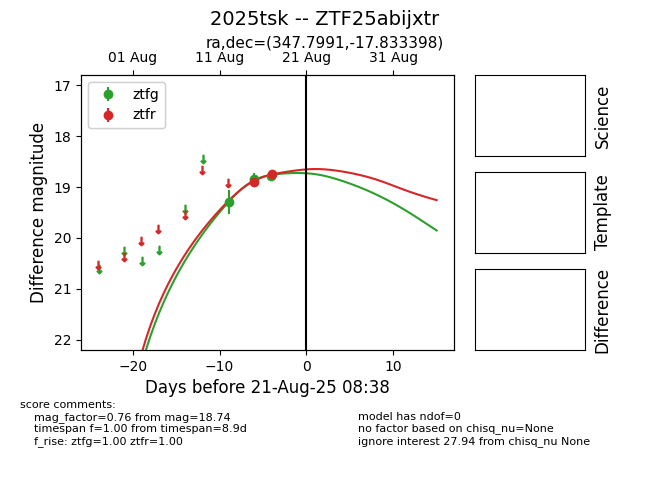

Target 2025tsk at 2025-08-21 08:38, see:
FINK: fink-portal.org/ZTF25abijxtr
Lasair: lasair-ztf.lsst.ac.uk/objects/ZTF25abijxtr
ALeRCE: alerce.online/object/ZTF25abijxtr
TNS: wis-tns.org/object/2025tsk
YSE: ziggy.ucolick.org/yse/transient_detail/2025tsk
alt names
ZTF25abijxtr (ztf,alerce)
2025tsk (tns,yse)
coordinates:
equatorial (ra, dec) = (347.7991,-17.83340)
galactic (l, b) = (49.5902,-65.10953)
photometry
last ztfg=18.78, ztfr=18.74
3 ztfg, 2 ztfr detections
